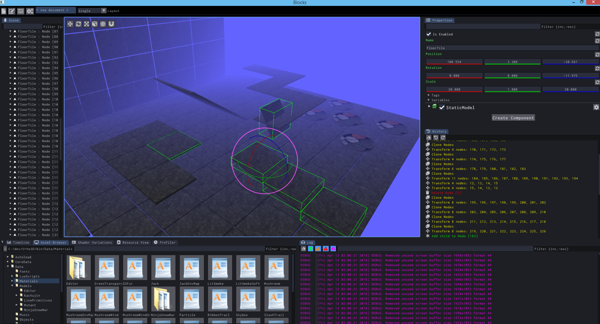

Sinoid
Fairly close to complete ImGui based editor with several points of extension via Angelscript.
Windows x64 binaries only, just drop into your
bin
directory. Tabbed scene/prefab editor, material editor, particle effect editor, and model viewer + tweaker.
Major things:
- Most important editor functionality is there
- OS thumbnails and embeds thumbnails into Scene and Node prefab files (based on active viewport)
-
Favorites
and
Recent
folder groups in asset browser
-
Asset browser is generally a first-class citizen
- play sounds, run scripts as one-offs, run scripts as editor actions on the current scene, drag-drop, etc
-
Asset browser is generally a first-class citizen
- Configurable rig scenes for Material/Particle/Model scenes
-
Scripts can:
- Add additional docking windows
-
Add menu items, commands, windows, etc
- Example for Bulk Renaming nodes
-
Extend or overwrite the property page’s handling of any Urho3D::Object derived type
- Example for attaching “Build NavMesh” button to the property page of NavigationMesh and DynamicNavigationMesh
- See readme for a full list of all of the events available for scripts to subscribe to and the API for registering things … slap a crapload of buttons on top of the 3d viewport if you want
Only major stuff missing is the renderpath setup, spawner, picking modes, and terrain tools - mostly trivial stuff. Multiple viewports are actually already there but hidden away ATM.
Unfortunately there’s no shortcuts / accelerators ATM, still working out what to do there that won’t suck.
https://github.com/JSandusky/Blocks



 ).
).